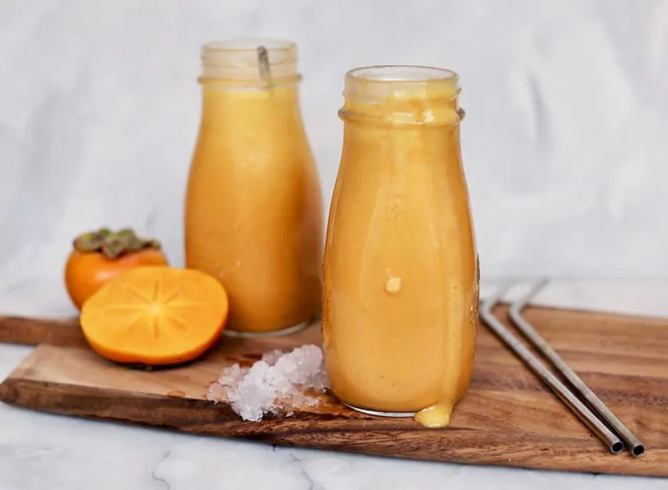

Élixirs naturels · 4 min de lecture
Élixir à la Lucuma : le rituel nutritionnel doux pour l’énergie durable, l’équilibre glycémique et la vitalité cellulaire

Introduction
Il existe des aliments capables de nourrir profondément le corps sans jamais le brusquer.
La lucuma, fruit ancestral des Andes surnommé l’or des Incas, fait partie de ces trésors naturels trop souvent méconnus.
Naturellement sucrée, riche en micronutriments et à faible indice glycémique, la lucuma est utilisée depuis des siècles pour soutenir l’énergie, la digestion et l’équilibre du corps, sans provoquer de pics ni de chutes brutales.
Dans cet article, je te présente un élixir naturel à base de lucuma, formulé avec une synergie d’ingrédients choisis pour créer une alchimie optimale pour la santé, la stabilité énergétique et le bien-être métabolique.
👉 Je tiens à vous rappeler une règle d’or que j’aime beaucoup et qui guide mes choix au quotidien : si la nature ne l’a pas créé, ne le buvez pas.
Le problème
Aujourd’hui, beaucoup de personnes vivent avec :
une dépendance au sucre,
des coups de fatigue récurrents,
des variations d’énergie dans la journée,
une glycémie instable,
une alimentation trop stimulante mais peu nourrissante.
Les produits sucrés industriels donnent l’illusion de l’énergie…
mais épuisent progressivement l’organisme.
Le corps n’a pas besoin de moins de plaisir,
il a besoin de meilleure qualité nutritionnelle.
La promesse
L’élixir à la lucuma agit comme un soutien énergétique doux et intelligent.
Il apporte une énergie stable, nourrit les cellules, soutient le métabolisme et offre une sensation de satiété et de réconfort, sans excitation ni crash.
Ce n’est pas un substitut de sucre.
C’est un rééquilibrant nutritionnel naturel.
Les bénéfices
Une énergie plus stable et durable
Une meilleure gestion de la glycémie
Une réduction des envies de sucre
Une digestion plus confortable
Un soutien global de la vitalité
🌿 Pourquoi ce remède est efficace
La lucuma est naturellement riche en :
fibres solubles,
minéraux (potassium, calcium, fer),
antioxydants,
vitamines du groupe B.
Son indice glycémique bas permet :
une libération progressive de l’énergie,
une meilleure stabilité hormonale,
moins de fringales et de fatigue nerveuse.
Associée à des ingrédients comme le lait végétal, la caroube et la vanille, la lucuma devient un véritable carburant doux, parfaitement assimilable par le corps.
👉 Elle nourrit sans exciter, stabilise sans contraindre.
💪 Les bienfaits de l’élixir à la lucuma
Énergie durable sans pic glycémique
Idéal pour éviter les coups de fatigue.Soutien du métabolisme
Les fibres et minéraux participent à une meilleure régulation énergétique.Réduction des envies sucrées
Sa saveur naturellement douce aide à se détacher du sucre raffiné.Soutien digestif
Favorise une digestion plus fluide et confortable.Nourrissant cellulaire
Apporte des micronutriments essentiels au bon fonctionnement du corps.
🍯 La recette de l’Élixir Énergie Douce & Équilibre à la Lucuma
Ingrédients (alchimie optimale)
1 cuillère à soupe de poudre de lucuma (bio)
250 ml de lait végétal (amande, noisette ou coco léger)
½ cuillère à café de caroube en poudre
Une pincée de vanille naturelle
½ cuillère à café de purée d’amandes (optionnelle)
Une pincée de cannelle douce
Pourquoi cette synergie fonctionne ?
La lucuma stabilise l’énergie et nourrit.
La caroube soutient la digestion et renforce la douceur naturelle.
Le lait végétal adoucit et facilite l’assimilation.
La purée d’amandes apporte des bons gras rassasiants.
La cannelle soutient la glycémie.
La vanille favorise le confort émotionnel.
Préparation
Fais chauffer doucement le lait végétal (sans ébullition).
Ajoute la lucuma, la caroube et la cannelle.
Fouette jusqu’à obtenir une boisson homogène.
Retire du feu et ajoute la vanille et la purée d’amandes.
Bois chaud ou tiède, lentement.
⏰ Comment l’utiliser
À consommer 1 fois par jour, idéalement :
le matin,
ou en collation nourrissante.
Peut être utilisé comme alternative saine aux boissons sucrées.
Convient aussi en période de fatigue ou de transition alimentaire.
👥 À qui s’adresse ce rituel
À ceux qui veulent réduire leur consommation de sucre
Aux personnes sujettes aux variations d’énergie
À ceux qui recherchent une énergie douce et stable
Aux personnes sensibles aux excitants
À toute personne cherchant un rituel nourrissant et réconfortant
⚠️ Précautions
Respecte les dosages : la lucuma est concentrée.
Choisis une lucuma pure, bio et sans additifs.
En cas de diabète, adapte les quantités avec un professionnel de santé.
À conserver à l’abri de l’humidité.
🌱 Conclusion & appel à l’action
L’élixir à la lucuma est une réconciliation avec l’énergie naturelle.
Il prouve qu’il est possible de se faire plaisir, de se nourrir et de se renforcer… sans jamais agresser le corps.
C’est un rituel doux, stable et profondément intelligent, pour celles et ceux qui veulent construire une vitalité durable.
👉 Si la nature ne l’a pas créé, ne le buvez pas.
Je partage régulièrement des élixirs, rituels et ressources bien-être pour t’aider à nourrir ton corps avec conscience, plaisir et cohérence.
📚 Je suis auteur bien-être sous le pseudo Chest0 JM.S., mes ouvrages sont disponibles sur Amazon.
🔗 Retrouve tout mon univers ici :
👉 https://chest0.fr
👉 Si tu veux aller plus loin, découvre aussi notre
« Travail assis : pauses actives »
👉 Créez votre planning de pauses gratuit : chest0.fr/outils/pauses-actives/
« Journal du sommeil »
👉 Tenez votre journal du sommeil sur 7 jours, gratuitement : chest0.fr/outils/journal-sommeil/
« Les 20 aliments des centenaires » et « Microbiote intestinal »
👉 Mes livres de recettes naturelles, élixirs et détox : chest0.fr/pages/livres.html
« 4 habitudes à observer au quotidien »
👉 Faites le point sur vos habitudes avec l'outil gratuit : chest0.fr/outils/equilibre-quotidien/
Plus de 40 recettes d'élixirs dans les livres Chest0.
Voir les livres